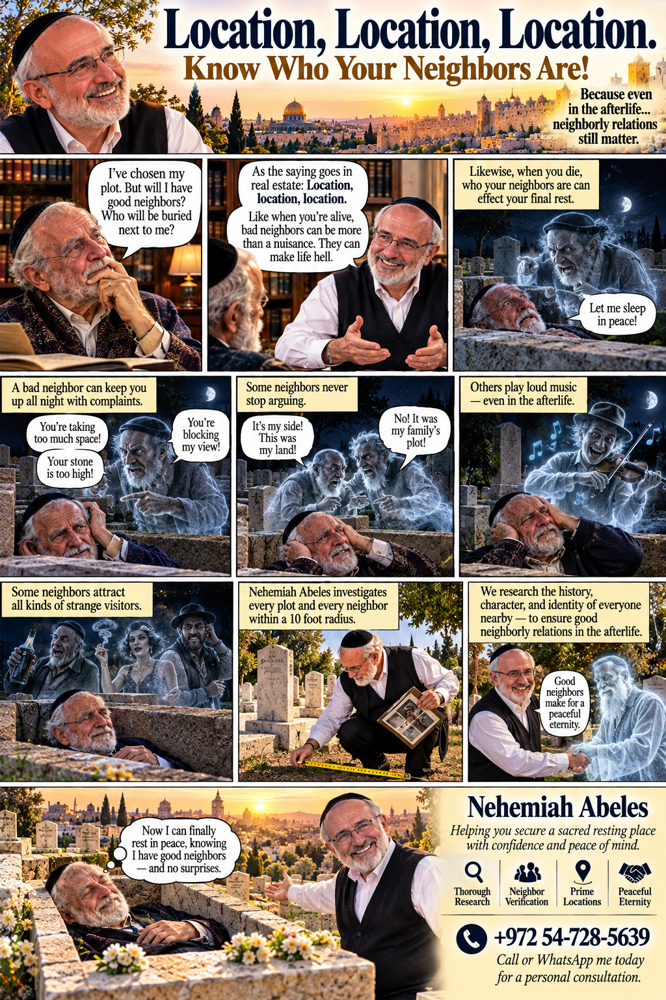

Rest in Peace
A two-page satirical advertising comic following a prospective buyer from choosing a cemetery plot to meeting his potential neighbors.


A two-page satirical advertising comic following a prospective buyer from choosing a cemetery plot to meeting his potential neighbors.
